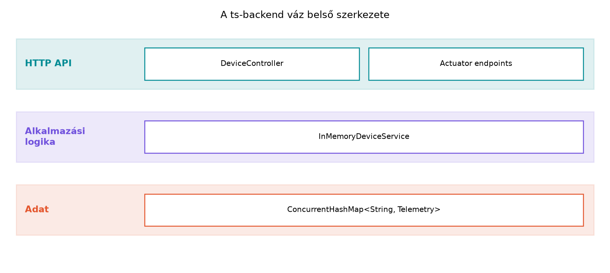

Az előző alfejezetben bevezettük a Spring Bootot mint a TerraSense
backendjének keretrendszerét. A ts-gw már képes MQTT-n
telemetriát küldeni a lab-broker felé, de a rendszernek még
nincs olyan szolgáltatása, amely a felhő oldalon fogadja, tárolja és
kiszolgálja ezeket az adatokat. Ebben az alfejezetben elkészítjük a
ts-backend válogatóját: egy olyan minimális, de konténerben
futtatható Spring Boot alkalmazást, amely már most fel tud mutatni REST
végpontokat, egészségellenőrzést és konfigurációt. A memóriabeli
adattárolót szándékosan ideiglenesnek szánjuk – a későbbi alfejezetekben
kicseréljük MQTT-ingestre, TimescaleDB-re és eszközárnyékra. A váz
azonban már most meghatározza a csomagszerkezetet, a konfigurációs
stílust és a konténeres futtatás módját, amelyet a Ingest: MQTT-ből a backendbe, idempotensen, a Idősoros adatbázisok és adatmodellezés, a Parancsok és konfiguráció lefelé: kézbesítés,
nyugtázás, időkorlát és a Megfigyelhetőség
végponttól végpontig: metrikák, naplók, nyomkövetés alfejezetek is
használni fognak.
Definíció. A REST API (Representational State Transfer) HTTP-alapú, erőforrásokra épülő interfész, ahol az erőforrásokat URI-k azonosítják, a műveleteket pedig a HTTP-metódusok (GET, POST, PUT, DELETE) fejezik ki. A válasz általában JSON, a státusz pedig a szabványos HTTP-állapotkód.
Definíció. Az egészségellenőrzés (health
check) olyan olvasási pont, amely jelzi, hogy a szolgáltatás él-e, és
képes-e az alapvető funkcióira. A Spring Bootban ezt a Spring Boot
Actuator modul biztosítja, amely további üzemeltetési végpontokat
is kínál, például metrikákat (/actuator/metrics),
környezeti infókat (/actuator/info) és konfigurációs
részleteket.
Definíció. Az alkalmazásprofil (profile) a
konfiguráció egy nevesített változata. A dev profil például
részletes naplózást és memóriabeli tárolót, a prod profil
szigorúbb beállításokat és valódi adatbázis-kapcsolatot használhat.
A háromrétegű belső felépítés elválasztja a HTTP-kezelést, az alkalmazási logikát és az adatelérést. Jelenleg minden réteg egyetlen osztályból vagy memóriabeli mapból áll:

A DeviceController fogadja a kéréseket, a
InMemoryDeviceService elvégzi a keresést és a validálást, a
ConcurrentHashMap pedig a legutolsó méréseket tárolja
kulcs-érték párként. Ez a felosztás lehetővé teszi, hogy később a
memóriabeli tárolót adatbázisra cseréljük anélkül, hogy a REST végpontok
kódját meg kellene változtatni.
A következő táblázat összefoglalja a váz kialakításakor hozott főbb döntéseket és azok indoklását:
| Döntés | Választás | Indoklás / kompromisszum |
|---|---|---|
| Nyelvi/framework verzió | Java 21, Spring Boot 3.x | A verzióprofil szerint modern, hosszú távú támogatású Java; a 3.x natívan támogatja a Jakarta EE 10+ API-kat. |
| REST útvonal előtag | /api/ |
Elkülöníti a nyilvános API-t az Actuator végpontjaitól, és
előkészíti a verziózást (/api/v1/...). |
| Adattárolás | ConcurrentHashMap a service-ben |
Szándékosan ideiglenes; így a REST réteg már most tesztelhető, a perzisztencia később cserélhető. |
| Health check | Actuator /actuator/health |
Szabványos, konténer-orchestrátorok (Docker, Kubernetes) által is felismert végpont. |
| Konfiguráció | application.yaml + profilok + környezeti változók |
A YAML olvashatóbb, a profilok külön környezetet adnak, a környezeti változók lehetővé teszik a konténerben való felülbírálást. |
| Konténerkép | Multi-stage Docker build | Csak a futáshoz szükséges JRE kerül a végleges image-be, kisebb méret és kevesebb támadási felület. |
A REST jó választás a backend és a dashboard/API-fogyasztók közötti szinkron, lekérdezésalapú kommunikációra. Az MQTT-ingesthez viszont aszinkron, eseményvezérelt feldolgozás kell majd, ezért a REST réteg és az MQTT-ingest réteg szét lesz választva a Ingest: MQTT-ből a backendbe, idempotensen alfejezetben.
ts-backend váz a Compose-banMunkakönyvtár: hozzuk létre a labor könyvtárát, és dolgozzunk benne:
mkdir -p ~/iot-labor/i043 && cd ~/iot-labor/i043A labor célja, hogy a ts-backend konténerben fusson,
REST végpontokat szolgáljon ki, és a /actuator/health
elérhető legyen. A labor végén a
~/iot-labor/stack/compose.yaml fájlban új szolgáltatásként
fog szerepelni.
Készítsünk pom.xml fájlt a következő tartalommal:
<?xml version="1.0" encoding="UTF-8"?>
<project xmlns="http://maven.apache.org/POM/4.0.0"
xmlns:xsi="http://www.w3.org/2001/XMLSchema-instance"
xsi:schemaLocation="http://maven.apache.org/POM/4.0.0
https://maven.apache.org/xsd/maven-4.0.0.xsd">
<modelVersion>4.0.0</modelVersion>
<parent>
<groupId>org.springframework.boot</groupId>
<artifactId>spring-boot-starter-parent</artifactId>
<version>3.4.1</version> <!-- ellenőrizendő: a legfrissebb stabil 3.x -->
<relativePath/>
</parent>
<groupId>com.terrasense</groupId>
<artifactId>ts-backend</artifactId>
<version>0.1.0</version>
<name>ts-backend</name>
<description>TerraSense backend váz</description>
<properties>
<java.version>21</java.version>
</properties>
<dependencies>
<dependency>
<groupId>org.springframework.boot</groupId>
<artifactId>spring-boot-starter-web</artifactId>
</dependency>
<dependency>
<groupId>org.springframework.boot</groupId>
<artifactId>spring-boot-starter-actuator</artifactId>
</dependency>
</dependencies>
<build>
<plugins>
<plugin>
<groupId>org.springframework.boot</groupId>
<artifactId>spring-boot-maven-plugin</artifactId>
</plugin>
</plugins>
</build>
</project>A spring-boot-starter-web a REST-kezeléshez szükséges
(beágyazott Tomcat, Jackson JSON-szerializáció), a
spring-boot-starter-actuator pedig az üzemeltetési
végpontokat adja.
Hozzuk létre a
src/main/java/com/terrasense/backend/TsBackendApplication.java
fájlt:
package com.terrasense.backend;
import org.springframework.boot.SpringApplication;
import org.springframework.boot.autoconfigure.SpringBootApplication;
@SpringBootApplication
public class TsBackendApplication {
public static void main(String[] args) {
SpringApplication.run(TsBackendApplication.class, args);
}
}A @SpringBootApplication a komponenskeresést, az
automatikus konfigurációt és a konfigurációs osztályok beolvasását
kapcsolja be.
Készítsünk Telemetry modellt a
src/main/java/com/terrasense/backend/model/Telemetry.java
fájlban:
package com.terrasense.backend.model;
public record Telemetry(
String nodeId,
long ts,
double temperature,
double humidity,
double soilMoisture
) {}A record tömör, immutable adatmodellt ad; a
JSON-szerializáció automatikus.
Hozzuk létre az InMemoryDeviceService osztályt a
src/main/java/com/terrasense/backend/service/InMemoryDeviceService.java
fájlban:
package com.terrasense.backend.service;
import com.terrasense.backend.model.Telemetry;
import org.springframework.stereotype.Service;
import java.util.List;
import java.util.Map;
import java.util.Optional;
import java.util.concurrent.ConcurrentHashMap;
@Service
public class InMemoryDeviceService {
private final Map<String, Telemetry> latestTelemetry = new ConcurrentHashMap<>();
public InMemoryDeviceService() {
// Labor-minta; élesben ezt az MQTT-ingest tölti majd fel.
latestTelemetry.put("n001", new Telemetry("n001",
1734567890123L, 22.5, 61.0, 34.0));
latestTelemetry.put("n002", new Telemetry("n002",
1734567895123L, 23.1, 58.5, 31.0));
}
public List<String> listDeviceIds() {
return latestTelemetry.keySet().stream().sorted().toList();
}
public Optional<Telemetry> findLatest(String nodeId) {
return Optional.ofNullable(latestTelemetry.get(nodeId));
}
}A konstruktorban feltöltött mintaadatok lehetővé teszik a
REST-végpontok azonnali tesztelését. Az Optional
használatával a controller később kényelmesen kezeli a hiányzó
eszközt.
Készítsük el a DeviceController osztályt a
src/main/java/com/terrasense/backend/controller/DeviceController.java
fájlban:
package com.terrasense.backend.controller;
import com.terrasense.backend.model.Telemetry;
import com.terrasense.backend.service.InMemoryDeviceService;
import org.springframework.http.ResponseEntity;
import org.springframework.web.bind.annotation.GetMapping;
import org.springframework.web.bind.annotation.PathVariable;
import org.springframework.web.bind.annotation.RequestMapping;
import org.springframework.web.bind.annotation.RestController;
import java.util.List;
@RestController
@RequestMapping("/api/devices")
public class DeviceController {
private final InMemoryDeviceService deviceService;
public DeviceController(InMemoryDeviceService deviceService) {
this.deviceService = deviceService;
}
@GetMapping
public List<String> listDevices() {
return deviceService.listDeviceIds();
}
@GetMapping("/{nodeId}/latest")
public ResponseEntity<Telemetry> latest(@PathVariable String nodeId) {
return deviceService.findLatest(nodeId)
.map(ResponseEntity::ok)
.orElse(ResponseEntity.notFound().build());
}
}A @GetMapping és a @PathVariable a Spring
Web deklaratív REST-kezelését mutatja: a metódus visszatérési értéke
automatikusan JSON-szerializálódik.
Hozzuk létre az src/main/resources/application.yaml
fájlt:
server:
port: 8080
spring:
application:
name: ts-backend
management:
endpoints:
web:
exposure:
include: health,info,metrics
endpoint:
health:
show-details: alwaysA management.endpoints.web.exposure.include beállítás
nélkül az Actuator csak a /actuator/health végpontot teszi
elérhetővé; a metrics most azért kerül be, hogy a Megfigyelhetőség végponttól végpontig: metrikák,
naplók, nyomkövetés alfejezetben rögtön láthassuk az első
adatokat.
Hozzunk létre egy application-dev.yaml profilt is, amely
a fejlesztés során hasznos részletes naplózást kapcsol be:
logging:
level:
com.terrasense.backend: DEBUGA profil aktiválása a SPRING_PROFILES_ACTIVE=dev
környezeti változóval történik a konténerben, vagy parancssorból
--spring.profiles.active=dev kapcsolóval.
Ellenőrizzük a buildet:
mvn verifyIndítsuk el lokálisan (hoston, nem konténerben), hogy meggyőződjünk a működésről:
mvn spring-boot:runEkkor a logban megjelenik a Tomcat started on port 8080
üzenet. Nyissunk egy másik terminálablakot, és próbáljuk ki:
curl -s http://localhost:8080/actuator/healthVárható kimenet:
{"status":"UP"}Állítsuk le a lokális folyamatot (Ctrl+C), majd hozzuk
létre a Dockerfile fájlt az ~/iot-labor/i043
könyvtárban:
FROM maven:3.9-eclipse-temurin-21 AS build
WORKDIR /app
COPY pom.xml .
RUN mvn dependency:go-offline
COPY src ./src
RUN mvn package -DskipTests
FROM eclipse-temurin:21-jre
WORKDIR /app
COPY --from=build /app/target/ts-backend-*.jar app.jar
EXPOSE 8080
ENTRYPOINT ["java", "-jar", "app.jar"]A multi-stage build először Maven-környezetben felépíti a futtatható
JAR-t, majd azt egy minimális Java-futásidőt tartalmazó image-be
másolja. A mvn dependency:go-offline előtölti a
függőségeket, így a build gyorsabban és megbízhatóbban fut
konténerben.
A ~/iot-labor/stack/compose.yaml fájlt bővítsük ki a
ts-backend szolgáltatással. A meglévő
lab-broker szolgáltatás mellett adjuk hozzá a következő
blokkot (a teljes fájl később, a Záróprojekt: a
teljes TerraSense rendszer összeállítása és átvétele alfejezetben
lesz kiírva):
ts-backend:
build: ../i043
container_name: ts-backend
ports:
- "8080:8080"
environment:
- SPRING_PROFILES_ACTIVE=dev
depends_on:
- lab-brokerA build: ../i043 a labor könyvtárban lévő Dockerfile-ra
mutat. A depends_on csak az indítási sorrendet
befolyásolja, nem várja meg, amíg a broker teljesen fel nem áll – ezt a
Gateway üzemeltetése: systemd, konténerek,
naplózás és későbbi alfejezetek részletesen tárgyalják.
A ~/iot-labor/stack könyvtárból indítsuk el a
szolgáltatást:
cd ~/iot-labor/stack
docker compose up -d --build ts-backendEllenőrizzük, hogy a konténer fut:
docker ps --filter name=ts-backend --format '{{.Names}} {{.Status}}'Várható kimenet (a pontos uptime eltérhet):
ts-backend Up 5 seconds (healthy)Végül próbáljuk le a REST API-t a hostról:
curl -s http://localhost:8080/api/devicesVárható kimenet:
["n001","n002"]A legutolsó mérés lekérdezése:
curl -s http://localhost:8080/api/devices/n001/latestVárható kimenet:
{"nodeId":"n001","ts":1734567890123,"temperature":22.5,"humidity":61.0,"soilMoisture":34.0}Ismeretlen eszköz esetén a válasz 404 Not Found:
curl -i http://localhost:8080/api/devices/n999/latestA válasz első sora: HTTP/1.1 404.
A labor helyes végrehajtását a következő tesztekkel ellenőrizhetjük:
mvn verify hiba
nélkül lefut, és létrejön a target/ts-backend-0.1.0.jar
fájl.curl -s http://localhost:8080/actuator/health
{"status":"UP"} értéket ad.docker compose up -d --build ts-backend nem hibázik, a
konténer healthy vagy Up állapotban van.Tipikus hibatünetek és javításuk:
| Tünet | Ok | Javítás |
|---|---|---|
curl: (7) Failed to connect |
A Spring Boot nem fut, vagy nem a 8080-as porton | Ellenőrizd a docker ps kimenetét; ha a konténer nem
fut, nézd meg a docker logs ts-backend naplót. |
404 Not Found a /actuator/health-en |
Az Actuator nincs a classpath-on, vagy az exposure nem tartalmazza a
health-et |
Győződj meg arról, hogy a spring-boot-starter-actuator
függőség benne van, és az application.yaml exposure listája
helyes. |
No qualifying bean of type 'InMemoryDeviceService' |
A service nincs @Service annotációval ellátva, vagy nem
a komponenskeresés alatti package-ben van |
Ellenőrizd a package nevet (com.terrasense.backend) és
az annotációt. |
| A konténer elindul, de a REST nem érhető el a hostról | A port-hozzárendelés hiányzik a Compose-ból | A ts-backend szolgáltatásban legyen
ports: - "8080:8080". |
| A Docker build lassú vagy elakad | A mvn dependency:go-offline letölti az összes
függőséget, és a hálózat lassú |
Használj helyi Maven repository cache-t (~/.m2
bindolása), vagy várd meg a letöltést. |
A health check nem egyenlő a rendszer
egészségével. Az Actuator /actuator/health
végpontja csak azt igazolja, hogy a Spring kontextus felállt, és a
beépített indikátorok nem jeleztek hibát. Azt nem tudja megmondani, hogy
a MQTT-kapcsolat él, a TimescaleDB elérhető, vagy a legutóbbi mérés
friss-e. A későbbi alfejezetekben ezért saját health indikátorokat és
alkalmazásszintű metrikákat adunk hozzá.
A memóriabeli tároló nem perzisztens. Ha a konténer újraindul, a konstruktorban betöltött mintaadatok visszaállnak, a futás közben hozzáadott mérések eltűnnek. Ez a váz szándékos része, de élesben azonnal megjelenne az adatvesztés. A Idősoros adatbázisok és adatmodellezés alfejezetben a memóriabeli service-t TimescaleDB-alapú repository-ra cseréljük.
A környezeti változók felülbírálják a YAML-t, de nem
mindig közvetlenül. A Spring Bootban a
SPRING_PROFILES_ACTIVE például a profil aktiválását
szabályozza, míg a SERVER_PORT a portot. A property-k
kötésekor a Spring relaxed bindingot használ: a YAML-ben
server.port, a környezeti változóban
SERVER_PORT ugyanazt a beállítást éri el. Nem minden
környezeti változó ilyen; a
management.endpoints.web.exposure.include például nem
rövidíthető MANAGEMENT_ENDPOINTS_WEB_EXPOSURE_INCLUDE-ra a
pontok miatt.
A 404 nem feltétlenül hibát jelent. A
ResponseEntity.notFound().build() szándékosan 404-et ad
ismeretlen eszköz esetén. Ez gyakori félreértés: a kliens hibásan
hibakeresést indít, pedig a szerver helyesen jelzi, hogy az erőforrás
nem létezik. A megfelelő státuszkódok használata fontos az
API-fogyasztók számára.
Fogalmi/döntési kérdés: Miért használunk a REST
API-ban /api előtagot, és miért hasznos, ha az Actuator
végpontjait nem ugyanazon az útvonalon tesszük közzé? Fogalmazz meg egy
olyan helyzetet, amikor a /api nélküli nyílt Actuator
kockázatot jelent.
Számítási/tervezési feladat: Tegyük fel, hogy az
eszközlista 1000 eszközből áll, és minden eszköz nevét
n001, n002, … formátumban tároljuk. Becsüld
meg a GET /api/devices válasz JSON-méretét, ha minden
azonosító átlagosan 4 karakter, a JSON tömb szintaxisa pedig
["n001","n002",...]. A vessző és az idézőjelek is
karakterek. Nagyságrendileg hány bájt lesz? (A tényleges méret a UTF-8
kódolástól és a szerializációtól függ, itt elég a közelítő
becslés.)
Implementációs feladat a TerraSense-ben: Bővítsd
az InMemoryDeviceService osztályt egy
updateTelemetry(Telemetry) metódussal, amely beilleszti
vagy felülírja a legutóbbi mérést. Ez a metódus később az MQTT-ingest
feldolgozásakor fog kelleni. Írj hozzá egy @PostMapping
végpontot is a DeviceController-be, amely fogad egy új
mérést, és beírja a service-be. Teszteld curl
segítségével.
Hibakeresési/kiterjesztési feladat: A
ts-backend konténer elindul, de a
curl http://localhost:8080/actuator/health hosszú ideig nem
ad választ, majd Connection timed out jelenik meg. Sorolj
fel legalább három lehetséges okot, és mindegyikre adj egy-egy
diagnosztikai lépést a docker logs vagy a
docker inspect parancs segítségével.
Az /api előtag elkülöníti a publikus, üzleti REST
erőforrásokat az üzemeltetési belső végpontoktól. Ha az Actuator
végpontjai is nyilvánosan, api előtag nélkül lennének
elérhetőek, egy támadó könnyebben felderíthetné a belső állapotot
(/actuator/health, /actuator/env,
/actuator/metrics). A security azt is lehetővé
teszi, hogy az /actuator/** útvonalra szigorúbb
hozzáférés-vezérlést alkalmazzunk, míg az /api útvonalakra
más szabályok vonatkoznak. A TerraSense esetében a dashboard és a külső
kliensek az /api-t, a monitoring pedig az
/actuator-t használja.
Egy azonosító JSON-ban így néz ki: "n001" = 1 idézőjel +
4 karakter + 1 idézőjel = 6 karakter. A tömb elemei között vessző van.
1000 elemnél a vesszők száma 999, egyenként 1 karakter. A nyitó és záró
szögletes zárójel 2 karakter. Így a teljes hossz:
UTF-8 kódolással, ha minden karakter 1 bájt (a példa karakterei ASCII), a válasz mérete körülbelül 7,0 kB. Ha a szerializáció még szóközöket vagy sortöréseket ad hozzá, a méret kissé nőhet, de nagyságrendileg 7 kB marad. Ez jól mutatja, hogy a JSON mérete sok kis azonosítónál a szintaxis miatt gyorsan nő; nagyobb listáknál érdemes lapozást vagy rövidebb kódolást használni.
Az InMemoryDeviceService bővítése:
public void updateTelemetry(Telemetry telemetry) {
latestTelemetry.put(telemetry.nodeId(), telemetry);
}A DeviceController bővítése:
@PostMapping("/{nodeId}/latest")
public ResponseEntity<Void> updateLatest(@PathVariable String nodeId,
@RequestBody Telemetry telemetry) {
if (!nodeId.equals(telemetry.nodeId())) {
return ResponseEntity.badRequest().build();
}
deviceService.updateTelemetry(telemetry);
return ResponseEntity.noContent().build();
}A @PostMapping és @RequestBody a beérkező
JSON-t automatikusan Telemetry objektummá alakítja. A
noContent() a 204-es státuszt adja vissza, jelezve, hogy a
kérés sikeres, de nincs választest.
Tesztelés:
curl -i -X POST http://localhost:8080/api/devices/n003/latest \
-H 'Content-Type: application/json' \
-d '{"nodeId":"n003","ts":1734567900000,"temperature":21.0,"humidity":55.0,"soilMoisture":29.5}'Ezután a GET /api/devices/n003/latest a friss adatot
adja vissza.
Lehetséges okok:
docker ps -a | grep ts-backend megmutatja az állapotot. Ha
Exited, nézd meg a docker logs ts-backend
naplót, valószínűleg a JAR nem indul el (pl. rossz package vagy
port).docker port ts-backend mutatja a port-hozzárendelést. Ha
nincs 0.0.0.0:8080, akkor a hostról nem érhető el. Ha a
8080-as port már foglalt, a Compose indításkor hibát ad; cseréld a host
portot, például 8081:8080.EXPOSE 8080-at ad, de a
application.yaml-ben server.port: 8080 van; ha
ezt felülbírálod SERVER_PORT környezeti változóval, a
port-hozzárendelés elavul. Ellenőrizd a
docker logs ts-backend első sorait: a
Tomcat started on port ... mutatja a tényleges portot.network_mode: host vagy más hálózati beállítás van, a
port-hozzárendelés másként működik.
docker inspect ts-backend mutatja a hálózati módot; a
Compose-ban a ports beállítás bridge hálózatot
feltételez.Elkészítettük a ts-backend Spring Boot vázát a
~/iot-labor/i043 könyvtárban. A projekt Maven-alapú, Java
21 és Spring Boot 3.x verzióval. A csomagszerkezet:
com.terrasense.backend alatt controller,
service, model. A
DeviceController két REST végpontot kínál:
GET /api/devices és
GET /api/devices/{nodeId}/latest. A
InMemoryDeviceService memóriabeli
ConcurrentHashMap-ben tárolja a legutolsó méréseket, és
konstruktorban mintaadatokat tölt be. Az Actuator
/actuator/health, /actuator/info és
/actuator/metrics végpontokat tesz elérhetővé. A
konfiguráció application.yaml-ben, a fejlesztői naplózás
application-dev.yaml profilban található. A multi-stage
Dockerfile futtatható JAR-t épít. A
~/iot-labor/stack/compose.yaml-ben a
ts-backend szolgáltatás a ../i043 build
contextet használja, a 8080-as portot publikálja, és a dev
profilt aktiválja. Továbbvitt eredmény. Ez a váz adja a
csomagszerkezetet, a konfigurációs stílust, a REST API-t és a
konténerizációt a Ingest: MQTT-ből a backendbe,
idempotensen, a Idősoros adatbázisok és
adatmodellezés, a Parancsok és konfiguráció
lefelé: kézbesítés, nyugtázás, időkorlát és a Megfigyelhetőség végponttól végpontig: metrikák,
naplók, nyomkövetés alfejezetekhez.
spring-boot-starter-parent kompatibilitás Java
21-gyel.management.endpoints.web.exposure.include property aktuális
neve és a show-details lehetséges értékei.maven:3.9-eclipse-temurin-21 – ellenőrizendő, hogy ez a tag
elérhető és aktuális.eclipse-temurin:21-jre –
ellenőrizendő a pontos tag.mvn dependency:go-offline parancs a Maven 3.9-ben –
ellenőrizendő, hogy a használt Maven verzióval kompatibilis-e a Docker
build során.@SpringBootApplication alapértelmezett
komponenskeresése a fő osztály package-ére és annak alpackage-eire
terjed ki – ez a jelen példában
com.terrasense.backend.